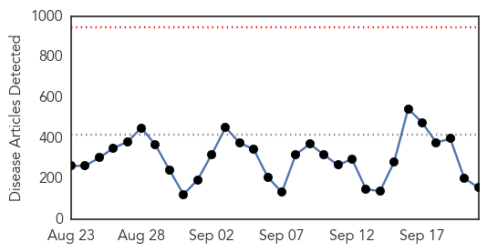

30 Day Trends
Web: 0 alerts, 0 warnings
Twitter: 0 alerts, 0 warnings
Top Articles:
- 1.000
- 500,000 ‘will contract Ebola’
- 1.000
- Ebola: joint UN assessment response team heads to Liberia
- 1.000
- Ebola: joint UN assessment response team heads to Liberia
- 1.000
- Ebola: joint UN assessment response team heads to Liberia
- 1.000
- The most from the coast
- 0.999
- Testimony to the US House Committee on Foreign Affairs
- 0.999
- Cuban Ebola Workers Reassure their Families
- 0.999
- Liberia to Provide 1,000 Ebola Beds in Overwhelmed Capital
- 0.999
- 100 tons of supplies to fight Ebola sent to West Africa
- 0.999
- Israel ups aid to Africa in fight against Ebola
- 0.999
- WHO: Death toll in West Africa Ebola epidemic reaches 2,630
- 0.999
- Sierra Leone Lockdown Declared "Success"
- 0.999
- Ebola could infect up to 500,000
- 0.998
- Israeli NGO sends team to Sierra Leone to help combat Ebola
- 0.998
- Another Spanish missionary doctor with Ebola repatriated
- 0.998
- New Ebola clinics useless without more trained staff
- 0.998
- Risk of 6,800 New Cases This Month
- 0.998
- Sierra Leone's Ebola Lockdown Continues
- 0.998
- Sierra Leone's Ebola Lockdown Continues
- 0.998
- Guinea Health Team Killed
- 0.998
- Clash between residents and workers occurs on day 2 of Sierra Leone curfew
- 0.998
- Ebola also killing West African commerce
- 0.998
- 8 members of Ebola fact-finding mission killed in Guinea
- 0.997
- CDC Sees 500,000 At Risk For Ebola
- 0.997
- Sierra Leone in lockdown amid fears of blowout to 500,000 Ebola infections in West Africa
- 0.997
- Samoa remains low risk for Ebola
- 0.997
- Ebola Virus Outbreak 2014: 3-Day National Lockdown Implemented in Sierra Leone for Ebola Campaign : News : Headlines & Global News
- 0.997
- Sierra Leone's Ebola Lockdown Continues
- 0.997
- Ebola also killing West African commerce
- 0.996
- Israel to up medical assistance to combat Ebola
- 0.996
- Medical Supplies Flood into Sierra Leone During Ebola Quarantine
- 0.996
- Ebola outbreak must be controlled
- 0.996
- Containing Ebola: Better late than never
- 0.996
- Cuba sends doctors to combat Ebola in Africa
- 0.995
- Overwhelmed West Africa ramps up Ebola response
- 0.995
- Overwhelmed west Africa escalates Ebola response
- 0.995
- Ebola crisis: Sierra Leone ends three-day lockdown; dozens more cases identified
- 0.995
- Time running out to stop Ebola
- 0.995
- Untitled Article
- 0.995
- Ebola Weakens Already Fragile Nations
- 0.994
- Sierra Leone shuts down for 3 days
- 0.994
- Overwhelmed west Africa ramps up Ebola response - Sierra Leone
- 0.994
- Israel joins fight against Ebola in Africa - Xinhua
- 0.993
- As Sierra Leone's Ebola lockdown draws to a close, questions remain
- 0.993
- UN to deploy Ebola mission as death toll reaches 2 630:Friday 19 September 2014
- 0.993
- Sierra Leone’s Ebola lockdown ends - Africa
- 0.993
- Sierra Leone on lock down as the country attempts to contain Ebola
- 0.993
- CDC issues new Ebola warning for crews of U.S. airlines
- 0.993
- Nationwide lockdown to fight Ebola in Sierra Leone
- 0.992
- Eerie Photos Capture Sierra Leone's Desperate Attempt to Stop the Spread of Ebola
Showing top 50 articles...
Top Tweets:
-
No tweets found for Sep 21, 2014
Web/News Articles
Tweets

Article Locations

Article Confidences